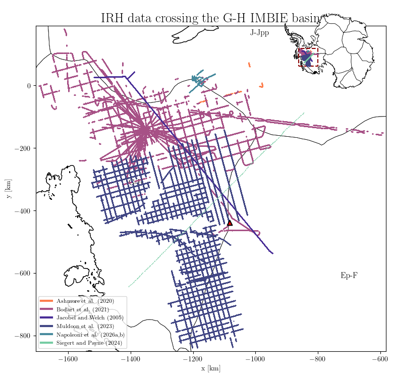
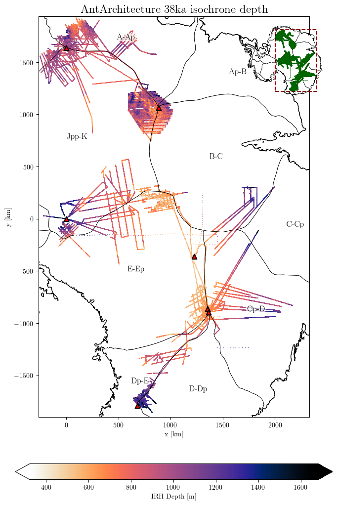
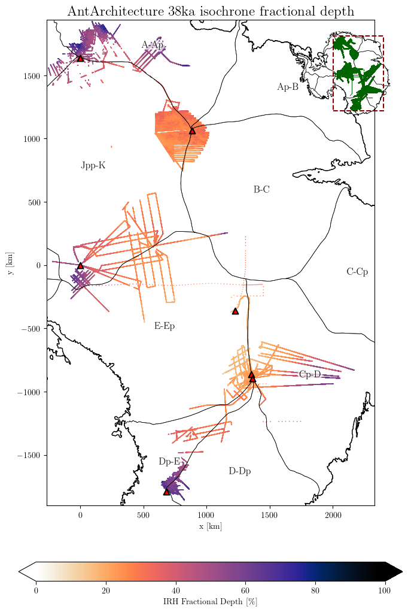
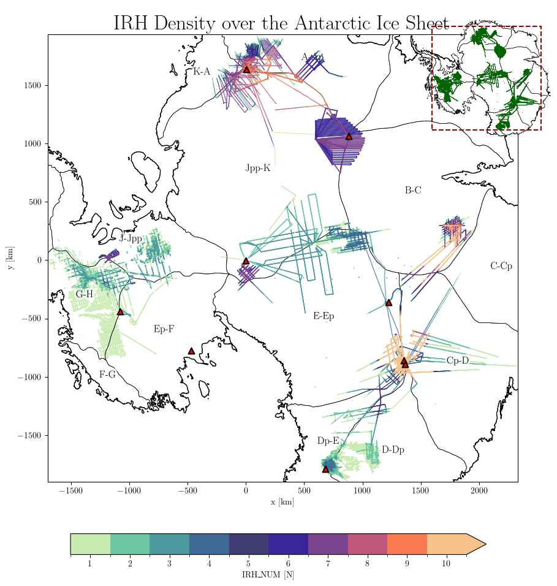
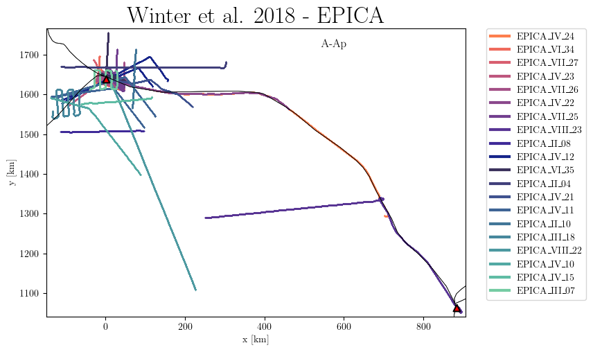
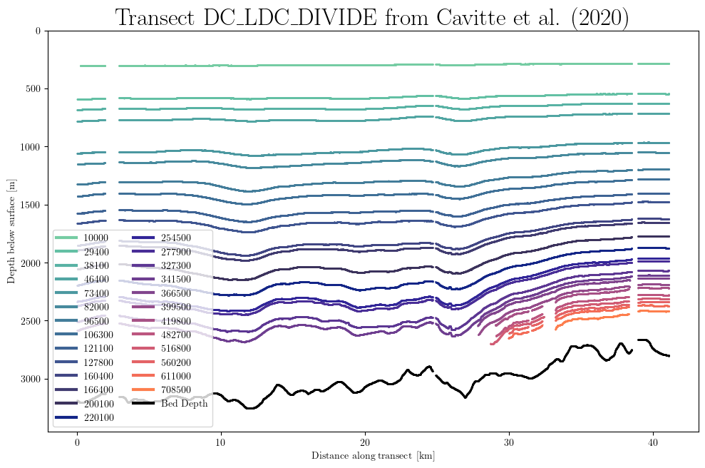
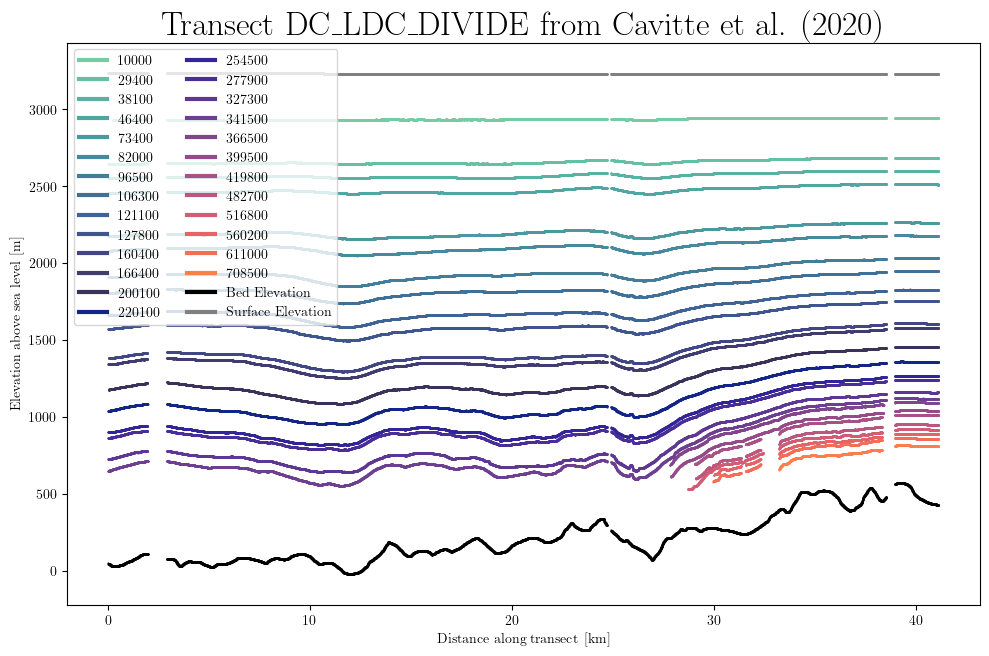
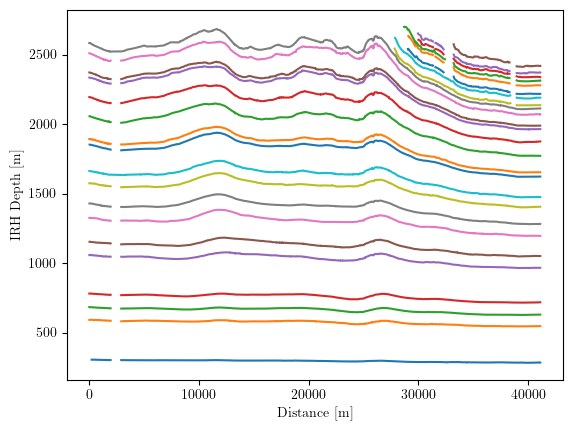
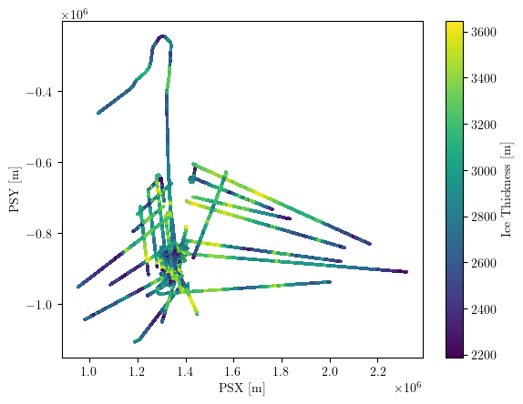

Quick Start Guide#
Welcome to the anta_database Python package!
This guide will walk you through the essential features of the anta_database package for accessing and analyzing the AntADatabase.
Prerequisites#
Before you begin:
Install the package:
pip install anta_databasePython 3.11 or higher is required
We recommend using a dedicated virtual environment
Important: The AntADatabase dataset is not publicly available. Contact antoine.hermant@unibe.ch for access
Installation#
Install the package from PyPI:
pip install anta_database
About This Guide#
This notebook demonstrates the core functionality of the anta_database package:
Database Initialization: Set up and index your AntADatabase
Querying: Filter data by dataset, institute, age, region, and more
Visualization: Create quick plots of IRH data
Data Access: Retrieve files and data for custom analysis
Note: You can download this notebook (top bar) and run it locally with your local AntADatabase folder.
1. Initializing the Database#
The Database class is your main interface to the AntADatabase. It provides SQL querying, filtering, and visualization capabilities.
First Time Setup#
When initializing the database for the first time, or when adding new datasets, use index_database=True to create the SQLite index:
# Initialize the database and create the SQL index
from anta_database import Database
# Replace with your actual database path
db = Database('/home/anthe/data/isochrones/AntADatabase/', index_database=True)
Found 12019 files to index
Note: The index_database=True argument creates a SQLite database (AntADatabase.db) that indexes all datasets in your AntADatabase folder. This enables fast querying and filtering. You only need to run this once or when adding new datasets.
Subsequent Uses#
For normal usage after the initial indexing:
# For subsequent uses (no need to re-index unless new datasets are added)
db = Database('/home/anthe/data/isochrones/AntADatabase/')
2. Querying the Database#
The query() method allows you to filter the database using various criteria. This is the primary way to access specific subsets of the data.
Query Parameters#
You can query by one or multiple criteria. Each parameter can accept a single value or a list of values:
Parameter |
Description |
Example Values |
|---|---|---|
|
Dataset name(s) |
|
|
Institute(s) that produced the data |
|
|
Project(s) under which data was collected |
|
|
Year(s) of data acquisition (supports ranges) |
|
|
Age(s) in years before present (supports ranges) |
|
|
Geographic region(s) |
|
|
IMBIE basin(s) |
|
|
Variable(s) of interest |
|
|
Flight line ID(s) (supports regex with |
|
Advanced Querying:
Use
<and>for ranges (e.g.,age='<50000'for ages younger than 50,000 years)Use
-for ranges (e.g.,acquisition_year='2000-2010')Use
%for regex patterns (e.g.,flight_id='%WSB%'for any ID containing ‘WSB’)
Query Examples#
Here are some practical examples of queries:
# Basic queries
db.query(dataset='Cavitte_2020') # All data from a specific dataset
db.query(institute='BAS') # All data from BAS
db.query(project='OIB') # All data from OIB campaigns
# Age-based queries
db.query(age=38100) # All datasets with the 38.1ka isochrone
db.query(age='36000-39000') # Age range
db.query(age='>90000') # Ages older than 90,000 years
# Geographic queries
db.query(IMBIE_basin='G-H') # Data crossing the G-H basin
db.query(region='EAIS') # East Antarctic Ice Sheet
# Variable queries
db.query(var='ICE_THK') # Datasets with ice thickness
db.query(var='IRH_DEPTH') # Datasets with IRH depth
# Flight line queries
db.query(flight_id='DC_LDC_DIVIDE') # Specific flight line
db.query(flight_id='%WSB%') # Any flight line containing 'WSB'
# Combined queries
db.query(dataset=['Franke_2025', 'Winter_2018'], age=38100) # Multiple criteria
Metadata from query:
- dataset: Franke_2025, Winter_2018
- institute: AWI
- project: ANTR
- acquisition_year: 1998-2008, None
- age: 38100
- age_unc: 100
- var: IRH_DEPTH
- region: EAIS
- IMBIE_basin: A-Ap, B-C, Jpp-K, K-A
- radar_instrument: AWI-UWB, EMR
- flight_id: 20181227_03_008, 19983201, 20231211_01_008, 20181227_03_007, 20231211_01_021, 20033141, 20181226_01_005, 20181222_01_004, 19993134, 19983207, 20181226_02_010, EPICA_VI_34, 20181226_03_003, 20231211_01_010, 20181222_01_001, 20023105, 20231211_02_013, 19972415, 19993107, 20231129_01_009, 20231211_01_022, 20013122, 20231211_02_003, 20181226_01_008, 19983206, [ ... ] , 19993112, 20181227_02_004, 20023152, 20231211_02_006, 20231211_01_009, 20022106, 20181222_01_002, 20181227_02_012, 20181227_03_002, 20181226_03_004, 20181227_03_001, 20181226_01_001, 19993132, 20231129_01_010, EPICA_II_04, 20181227_02_008, EPICA_II_10, EPICA_VIII_22, 20023154, 20023148, 20231211_02_020, EPICA_IV_10, 20023115, 20022104, EPICA_VII_26 (found 215, displayed 50)
- reference: Franke et al. (2025), Winter et al. (2018)
- dataset DOI: https://doi.org/10.1594/PANGAEA.973266, https://doi.org/10.1594/PANGAEA.895528
- publication DOI: https://doi.org/10.5194/tc-19-1153-2025, https://doi.org/10.5194/essd-11-1069-2019
- database: /home/anthe/data/isochrones/AntADatabase//AntADatabase.db
- query params: {'dataset': ['Franke_2025', 'Winter_2018'], 'institute': None, 'project': None, 'acquisition_year': None, 'age': '38100', 'var': None, 'flight_id': None, 'region': None, 'IMBIE_basin': None, 'radar_instrument': None}
- filter params: {'dataset': [], 'institute': [], 'project': [], 'acquisition_year': [], 'age': [], 'var': [], 'flight_id': [], 'region': [], 'IMBIE_basin': [], 'radar_instrument': []}
Get an Overview#
To see all available data without filters:
# Get overview of entire database
db.query()
Metadata from query:
- dataset: Ashmore_2020, Beem_2021, Bodart_2021, Bodart_2025a, Bodart_2025b, Cavitte_2020, Chung_2023, Franke_2025, Jacobel_2005, Leysinger_Vieli_2011, Muldoon_2023, Mulvaney_2023, Napoleoni_2026, Sanderson_2024, Siegert_2004, Wang_2023, Winter_2018, Yan_2025
- institute: AWI, BAS, Durham University, LDEO, NASA-CRESIS, PRIC, PRIC-UTIG-AAD, SPRI-NSF-DTU, St-Olaf-College, UA, UTIG, UTIG-AAD
- project: AGAP-NORTH, AGAP-SOUTH-GAMBIT, AGASEA, ANTR, ATRS, BBAS, BE-OI, CHARISO, GIMBLE, ICECAP, ICECAP-OIA, ICECAP2, IMAFI, OIB, POLARGAP, PPT, SNACC-DML, SOAR-CASERTZ, SOAR-DVD, SPC, Subglacial Lake CECs Exploration Program, US-ITASE, WISE_ISODYN, nan
- acquisition_year: 1970-1979, 1974-1978, 1998-2008, 1999-2025, 2001-2002, 2004, 2005, 2005-2019, 2007-2016, 2009, 2010, 2011, 2012, 2013, 2014, 2016, 2016-2018, 2016-2019, 2017, 2018, None
- age: 800, 2260, 2615, 3100, 3700, 4700, 4720, 4800, 4890, 5600, 6400, 6500, 6940, 7200, 7400, 7600, 8500, 9500, 10000, 10001, 10516, 10700, 11100, 12000, 12400, 13200, 13500, 15000, 15400, 16000, 16500, 16800, 17500, 17532, 18000, 23500, 25600, 29100, 29400, 30397, 31400, 36300, 36500, 37600, 38000, 38100, 38200, 38500, 39215, 43600, 46400, 47110, 48300, 51400, 52200, 62235, 62477, 64400, 72500, 73000, 73300, 73400, 73500, 74200, 75160, 75300, 80007, 82000, 82646, 84300, 90000, 90200, 90400, 91000, 93900, 95500, 96500, 97667, 106300, 108315, 113000, 117400, 118342, 121000, 121100, 127800, 128400, 128542, 129000, 132000, 135600, 160000, 160400, 161100, 161900, 166112, 166400, 169100, 170514, 179000, 200100, 202334, 203000, 215000, 220100, 239000, 240397, 243000, 244718, 254500, 262159, 277900, 304000, 320000, 326168, 327300, 336000, 341500, 345462, 352358, 365000, 366500, 381523, 395802, 396000, 399500, 414644, 419800, 473000, 482700, 516800, 560200, 611000, 708500
- age_unc: -, 920, 305, -, 1520, -, 280, 620, 2010, -, -, 600, 310, 100, 800, 3150, 900, 800, 300, 800, -, -, 100, 800, 5210, 400, 900, 1000, 1190, -, 790, -, -, -, 900, 1700, 100, -, 900, -, 3000, 3600, -, -, 800, 100, 600, 2200, -, 4900, 900, -, 1200, -, 100, -, -, 3000, -, -, -, 880, 2200, 1700, -, 7000, -, 1600, -, -, -, 1600, 3570, 1100, -, 7500, -, -, 1900, -, -, 1200, -, -, 1800, 1800, 3600, -, -, -, 10300, -, 3900, 3500, 6760, -, 3600, 19000, -, -, 2600, -, -, -, 3300, -, -, -, -, 5500, -, 4900, -, -, -, 4100, -, 5600, -, -, -, 7900, -, -, -, 9700, -, 13700, -, 22100, 21900, 27200, 35400, 54000
- var: BASAL_UNIT, BED_ELEV, ICE_THK, IRH_DEPTH, IRH_NUM, SURF_ELEV
- region: EAIS, WAIS
- IMBIE_basin: A-Ap, Ap-B, B-C, C-Cp, Cp-D, D-Dp, Dp-E, E-Ep, Ep-F, G-H, J-Jpp, Jpp-K, K-A
- radar_instrument: AWI-UWB, CORDS, DELORES, EMR, HICARS, LDC-VHF, MCORDS, PASIN, SPRI-NSF-DTU-radar, ULUR, nan
- flight_id: WSB_JKB2h_R40b, BH01B-BH01BB_Proc2, 20231129_01_020, SPC_GCX0e_X114a, BH47E-BH47B_proc, 20033141, 19983457, PEL_JKB2u_X22a_depth, 2014-12-23-P1_COMB_INT_COH4P14, 20181226_03_003, OIA_JKB2n_Y74a, LSE_GCX0f_Y63a_depth, 20231211_01_010, RAID2-BH01B_proc2, 2014-12-23-P1_COMB_INT_COH4P12, THW_SJB2_X61a, BH13E-BH13B_proc2, 20231211_02_013, BV28B-BV28E_proc2, 19993107, W43B, 20231211_01_022, HRB7-HRB8_proc2, VCD_JKB2g_X13a, 20181226_01_008, [ ... ] , LSE_JKB2u_Y93b_depth, 20231211_02_006, 2014-01-23-153448_COMB_INT_COH4p1, c28a, THW_SJB2_Y23a, W58, W41, B26, THW_SJB2_X27a, LSE_JKB2u_Y123b_depth, 2014-12-20-P1_COMB_INT_COH4P1, W62, BH03B-BH03E_proc2, 20181107_01_001_025, THW_SJB2_X85a, IRH_20172025, 20023148, PNH15ETOB, EPICA_IV_10, 2014-01-20-151840_COMB_INT_COH4p2, c15b, 2014-12-19-P1_COMB_INT_COH4P4, 2014-01-22-093246_COMB_INT_COH4p3, ICP7_JKB2n_F16T04a, THW_SJB2_DRP10a (found 948, displayed 50)
- reference: Ashmore et al. (2020), Beem et al. (2021), Bodart et al. (2021), Bodart and Sutter (2025a), Bodart and Sutter (2025b), Cavitte et al. (2020), Chung et al. (2023), Franke et al. (2025), Jacobel and Welch (2005), Leysinger-Vieli et al. (2011), Muldoon et al. (2023), Mulvaney et al. (2023), Napoleoni et al. (2026a,b), Sanderson et al. (2024), Siegert and Payne (2024), Wang et al. (2023), Winter et al. (2018), Yan et al. (2025)
- dataset DOI: https://doi.org/10.5281/zenodo.4945301, https://doi.org/10.15784/601437, https://doi.org/10.5285/F2DE31AF-9F83-44F8-9584-F0190A2CC3EB, https://doi.org/10.5281/zenodo.17348976, https://doi.org/10.5281/zenodo.17348094, https://doi.org/10.15784/601411, https://doi.pangaea.de/10.1594/PANGAEA.957176, https://doi.org/10.1594/PANGAEA.973266, https://doi.org/10.7265/N5R20Z9T, https://doi.org/10.5281/zenodo.15516203, https://doi.org/10.15784/601673, https://doi.pangaea.de/10.1594/PANGAEA.963470, , https://doi.org/10.5285/cfafb639-991a-422f-9caa-7793c195d316, https://onlinelibrary.wiley.com/doi/10.1002/esp.1238, https://doi.org/10.1594/PANGAEA.958462, https://doi.org/10.1594/PANGAEA.895528, https://doi.org/10.5281/zenodo.14962526
- publication DOI: https://doi.org/10.1029/2019GL086663, https://doi.org/10.5194/tc-15-1719-2021, https://doi.org/10.1029/2020JF005927, https://doi.org/10.5194/egusphere-2025-5381, https://doi.org/10.5194/essd-13-4759-2021, https://doi.org/10.5194/tc-17-3461-2023, https://doi.org/10.5194/tc-19-1153-2025, https://doi.org/10.1029/2003GL017210, https://doi.org/10.1029/2010JF001785, https://doi.org/10.1093/climatesystem/dzy004, https://doi.org/10.5194/tc-20-2793-2026, https://doi.org/10.1017/jog.2024.60, https://doi.org/10.1029/2004GL020290, https://doi.org/10.5194/tc-17-4297-2023, https://doi.org/10.5194/essd-11-1069-2019, https://doi.org/10.1017/jog.2025.15
- database: /home/anthe/data/isochrones/AntADatabase//AntADatabase.db
- query params: {'dataset': None, 'institute': None, 'project': None, 'acquisition_year': None, 'age': None, 'var': None, 'flight_id': None, 'region': None, 'IMBIE_basin': None, 'radar_instrument': None}
- filter params: {'dataset': [], 'institute': [], 'project': [], 'acquisition_year': [], 'age': [], 'var': [], 'flight_id': [], 'region': [], 'IMBIE_basin': [], 'radar_instrument': []}
Persistent Filtering#
The filter_out() method allows you to permanently exclude certain data from all subsequent queries:
# Exclude data acquired before 1990
db.filter_out(acquisition_year='<1990')
# Now all queries will exclude pre-1990 data
# results = db.query()
# Reset all filters to include all data again
db.filter_out() # Clear all filters
# results = db.query()
3. Visualization#
The anta_database package includes built-in plotting functions for quick data visualization. All plots are designed to work with Antarctic coordinate systems.
Available Plotting Functions#
Function |
Description |
|---|---|
|
Plot data points colored by dataset |
|
Plot data points colored by institute |
|
Color-coded scatter plot of a specific variable |
|
Plot data points colored by flight ID |
|
Plot IRH and bed depths along a flight line |
Matplotlib Backend Note: In Jupyter Notebook, you can use:
%matplotlib inline(default) - plots appear in the notebook%matplotlib widget- interactive plots with zoom/pan%matplotlib qt- external window (depends on your IDE)
Plot by Dataset#
Visualize the spatial distribution of data from different datasets:
# Set matplotlib backend
%matplotlib inline
# Query data for a specific basin
results = db.query(IMBIE_basin='G-H')
# Plot the data
db.plot.dataset(
results,
title='IRH data crossing the G-H IMBIE basin',
marker_size=1, # Adjust marker size
scale_factor=0.8 # Adjust overall plot size
)
/home/anthe/projects/phd/python/anta_database/anta_database/plotting/plotting.py:974: UserWarning: This figure includes Axes that are not compatible with tight_layout, so results might be incorrect.
plt.tight_layout()

Note: All flight lines in the database are associated with one or more IMBIE basins. The plot above shows all flight lines with traced IRH data that cross the G-H basin at some point.
Plot Variables#
Create color-coded plots of specific variables. This example shows IRH depth for layers around 38ka:
# Query IRH depth data for a specific age range
results = db.query(age='36000-39000', var='IRH_DEPTH')
# Plot absolute IRH depth
db.plot.var(
results,
title='AntArchitecture 38ka isochrone depth',
downsampling_factor=10, # Reduce data density for faster plotting
scale_factor=0.7,
marker_size=1.2,
# save='AntA_38ka_depth.png' # Uncomment to save figure
)
WARNING: Multiple layers provided: ['36300', '36500', '37600', '38000', '38100', '38200', '38500']
Select a unique age for better results
/home/anthe/projects/phd/python/anta_database/anta_database/plotting/plotting.py:974: UserWarning: This figure includes Axes that are not compatible with tight_layout, so results might be incorrect.
plt.tight_layout()

Fractional Depth#
For comparing layers across regions with different ice thicknesses, use fractional depth (depth relative to ice thickness):
# Plot fractional depth instead of absolute depth
results = db.query(age='36000-39000', var='IRH_DEPTH')
db.plot.var(
results,
fraction_depth=True, # Use fractional depth instead of absolute
title='AntArchitecture 38ka isochrone fractional depth',
downsampling_factor=10,
scale_factor=0.7,
marker_size=1.2
)
WARNING: Multiple layers provided: ['36300', '36500', '37600', '38000', '38100', '38200', '38500']
Select a unique age for better results
/home/anthe/projects/phd/python/anta_database/anta_database/plotting/plotting.py:974: UserWarning: This figure includes Axes that are not compatible with tight_layout, so results might be incorrect.
plt.tight_layout()

Important: If the ICE_THK variable is not present in a dataset, fractional depth cannot be computed and will result in NaN values.
Plot IRH Density#
Visualize the density of traced isochrones (number of layers per data point):
# Query IRH_NUM variable (number of traced layers per point)
results = db.query(var='IRH_NUM')
## Plot density
db.plot.var(
results,
title='IRH Density over the Antarctic Ice Sheet',
downsampling_factor=100, # Higher downsampling for dense data
scale_factor=1,
marker_size=1.2
)
/home/anthe/projects/phd/python/anta_database/anta_database/plotting/plotting.py:974: UserWarning: This figure includes Axes that are not compatible with tight_layout, so results might be incorrect.
plt.tight_layout()

Plot by Flight ID#
Useful for identifying specific flight lines of interest:
# Query specific flight lines
results = db.query(dataset='Winter%', flight_id=['EPICA%'])
# Plot flight IDs
db.plot.flight_id(
results,
title='Winter et al. 2018 - EPICA',
marker_size=1.2,
mini_map=False,
)
/home/anthe/projects/phd/python/anta_database/anta_database/plotting/plotting.py:974: UserWarning: This figure includes Axes that are not compatible with tight_layout, so results might be incorrect.
plt.tight_layout()

Plot Transect (1D)#
Plot IRH and bed depths along a specific flight line:
# Query a specific flight line
results = db.query(dataset='Cavitte_2020', flight_id='DC_LDC_DIVIDE')
# Basic transect plot
db.plot.transect_1D(results)
# Plot with elevation (absolute depth above sea level)
db.plot.transect_1D(results, elevation=True)
/home/anthe/projects/phd/python/anta_database/anta_database/plotting/plotting.py:974: UserWarning: This figure includes Axes that are not compatible with tight_layout, so results might be incorrect.
plt.tight_layout()

/home/anthe/projects/phd/python/anta_database/anta_database/plotting/plotting.py:974: UserWarning: This figure includes Axes that are not compatible with tight_layout, so results might be incorrect.
plt.tight_layout()

Plotting Options#
All plotting functions support these common options:
cmap: Custom colormap (useimport colormaps as cmapsfor many options)vminandvmax: Set colorbar limitsxlimandylim: Set the extend of the plot (Note: x and y axes are in km)mini_map: Show/hide the Antarctic overview map (default: True)auto_zoom: Automatically adjust plot extent (default: True)grounding_line: Show/hide grounding line (default: True)basins: Show/hide IMBIE basins (default: True)stations: Show/hide ice core stations (default: True)save: Save figure to file (e.g.,save='my_plot.png')
4. BEDMAP Integration#
The AntADatabase includes BEDMAP (1, 2, and 3) data, which is useful for:
Viewing the full extent of existing radar data
Getting bed elevation or ice thickness when not included in IRH datasets
By default, BEDMAP data is not included in queries since it’s not IRH data. To include it:
# Initialize database with BEDMAP included
db = Database('/home/anthe/data/isochrones/AntADatabase/', include_BEDMAP=True)
5. Accessing Data Files#
For custom analysis or plotting, you can access the underlying HDF5 files directly.
Get File List#
Retrieve the list of files matching your query:
import xarray as xr
import matplotlib.pyplot as plt
# Query specific data
results = db.query(dataset='Cavitte_2020', flight_id='DC_LDC_DIVIDE')# Display query results
# Get list of files
file_list = db.get_files(results)
# Open and inspect a file with xarray
f = file_list[0]
ds = xr.open_dataset(f, engine='h5netcdf')
print(ds)
# Quick plot of IRH depth vs distance
plt.plot(ds.Distance, ds.IRH_DEPTH)
plt.xlabel('Distance [m]')
plt.ylabel('IRH Depth [m]')
plt.show()
<xarray.Dataset> Size: 2MB
Dimensions: (point: 7882, IRH_AGE: 26)
Coordinates:
* point (point) int64 63kB 0 1 2 3 4 5 ... 7877 7878 7879 7880 7881
* IRH_AGE (IRH_AGE) int64 208B 10000 29400 38100 ... 560200 611000 708500
Data variables:
PSX (point) float64 63kB ...
PSY (point) float64 63kB ...
ICE_THK (point) float64 63kB ...
BED_ELEV (point) float64 63kB ...
SURF_ELEV (point) float64 63kB ...
IRH_DEPTH (point, IRH_AGE) float64 2MB ...
IRH_AGE_UNC (IRH_AGE) int64 208B ...
Distance (point) float64 63kB ...
IRH_NUM (point) int32 32kB ...
Attributes:
dataset: Cavitte_2020
institute: ['UTIG-AAD', 'NASA-CRESIS', 'BAS']
project: ['ICECAP-OIA', 'OIB', 'BE-OI']
radar instrument: nan
acquisition year: none
flight ID: DC_LDC_DIVIDE
flight ID flag: original
DOI dataset: https://doi.org/10.15784/601411
DOI publication: https://doi.org/10.5194/essd-13-4759-2021
IMBIE_basins: {"E-Ep": "EAIS", "Cp-D": "EAIS"}

xarray vs h5py#
xarray provides a convenient interface and works well for single files or small datasets. However, it adds some overhead.
h5py reads data more efficiently and is better for processing many files:
import h5py
import matplotlib.pyplot as plt
# Query data
results = db.query(dataset='Cavitte_2020')
file_list = db.get_files(results)
# Process multiple files efficiently with h5py
for f in file_list:
with h5py.File(f, 'r') as ds:
plt.scatter(ds['PSX'][:], ds['PSY'][:], c=ds['ICE_THK'][:], s=1)
plt.xlabel('PSX [m]')
plt.ylabel('PSY [m]')
plt.colorbar(label='Ice Thickness [m]')
plt.show()

6. Lazy Data Generation#
The data_generator() method efficiently reads query results and yields pandas DataFrames for each flight line. This is memory-efficient for large datasets.
Basic Usage#
Each DataFrame contains all queried variables and ages. IRH depth columns are named by age (e.g., ‘38000’ for the 38ka layer).
import numpy as np
# Query data for a specific age range
results = db.query(age='36000-39000', var='IRH_DEPTH')
# Generate data lazily
lazy_dfs = db.data_generator(results)
# Process each flight line
mean_depth_trs = []
min_depth = float('inf')
max_depth = float('-inf')
for df, md in lazy_dfs:
# df is a pandas DataFrame, md is the metadata
depth_values = df[md['age']].values # Access by age column
mean_depth_trs.append(np.nanmean(depth_values))
min_depth = min(min_depth, np.nanmin(depth_values))
max_depth = max(max_depth, np.nanmax(depth_values))
# Calculate statistics
mean_depth = np.nanmean(mean_depth_trs)
std_dev = np.nanstd(mean_depth_trs, ddof=1)
print(f'The mean depth of the 38ka isochrone across East Antarctica is {round(mean_depth, 2)} m')
print(f'Range: {round(min_depth, 2)} m to {round(max_depth, 2)} m')
The mean depth of the 38ka isochrone across East Antarctica is 1079.6 m
Range: 210.9 m to 2352.19 m
Note: The data_generator returns a pandas DataFrame for each flight line, containing all queried variables and ages. IRH depth for each layer is stored in columns named by age (e.g., df['38000'] for the 38ka layer).
You can access the current DataFrame’s age using the metadata: md['age'].
For fractional depth, use: db.data_generator(results, fraction_depth=True)
7. Pro Tips#
Query Memory#
The Database methods keep the last query in memory. You don’t need to pass the query results explicitly to subsequent methods:
# Run a query
# db.query(var='IRH_NUM')
# Subsequent methods use the last query automatically
# db.plot.var() # Equivalent to db.plot.var(results)
# The data_generator also uses the last query if no results are passed
# for df, md in db.data_generator():
# # Process each flight line
# density_values = df['IRH_NUM']
# # ... your analysis code
Example: Calculate Average IRH Density#
Here’s a complete example using the query memory feature:
# Query IRH_NUM data
db.query(var='IRH_NUM')
# Calculate statistics without explicitly passing results
mean_density_trs = []
min_density = float('inf')
max_density = float('-inf')
for df, md in db.data_generator():
density_values = df['IRH_NUM']
mean_density_trs.append(np.mean(density_values))
min_density = min(min_density, min(density_values))
max_density = max(max_density, max(density_values))
mean_density = np.mean(mean_density_trs)
print(f'The average number of picked layers per data point in the AntADatabase is {int(mean_density)}')
print(f'Range: {int(min_density)} to {int(max_density)}')
The average number of picked layers per data point in the AntADatabase is 7
Range: 1 to 26
Conclusion#
You’ve now seen the core functionality of the anta_database package!
Key Takeaways:#
Querying: Use
db.query()with various parameters to filter dataFiltering: Use
db.filter_out()to permanently exclude dataVisualization: Use
db.plot.*()methods for quick, publication-quality plotsData Access: Use
db.get_files()anddb.data_generator()for custom analysisMemory Efficiency: The package is designed to handle large datasets efficiently
Next Steps:#
Explore the PISM Example for model-data comparison
Check the Advanced Usage section for database management
Visit the GitHub repository for updates
Remember: The AntADatabase dataset is not publicly available yet. Contact antoine.hermant@unibe.ch for access.